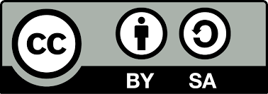
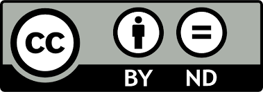
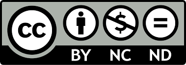

Las licencias Creative Commons son un conjunto de licencias públicas que permiten a los creadores compartir sus obras bajo condiciones específicas, facilitando su uso, distribución y modificación de manera legal. Existen diferentes tipos de licencias que varían en los permisos otorgados, como la atribución, la posibilidad de realizar modificaciones o el uso exclusivo para fines no comerciales. Estas licencias ayudan a equilibrar los derechos del autor con el acceso y la difusión del contenido.
Como vemos, no es una alternativa a los derechos de autor, sino que se apoya en esta legislación para fomentar el conocimiento abierto. El autor decide, por medio de la licencia concreta que utilice, qué derechos cede y bajo qué condiciones. En el sistema de licencias CC se definen 4 condiciones:
Permite usar, distribuir y modificar el trabajo, siempre que se otorgue el crédito adecuado al autor.

Permite lo mismo que CC BY, pero cualquier trabajo derivado debe estar bajo la misma licencia.
Permite usar y distribuir el trabajo, pero no se pueden realizar modificaciones.
Solo permite el uso del trabajo para fines no comerciales y no se pueden hacer modificaciones.
Permite a los creadores renunciar por completo a sus derechos de autor, colocando su obra en el dominio público. Esto significa que cualquier persona puede utilizar, modificar, distribuir y compartir la obra sin necesidad de pedir permiso o dar crédito al autor, y sin ninguna restricción, incluso con fines comerciales. Su propósito es fomentar el libre acceso y la reutilización de las obras.